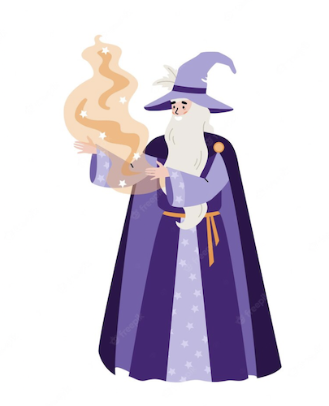
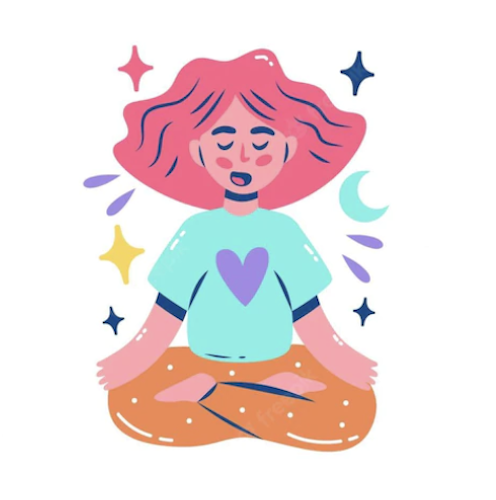

Escalar
Hace un tiempo descubrí el mundo de la escalada deportiva, y me encantó la conexión con la naturaleza y el desafío personal que involucra escalar la roca.

Magia
Conectar con el Poder Superior a través de confiar en sentir, creer y escuchar ha sido un antes y un después
Programar
Comenzar a programar significa un cambio de vida y nuevas opciones profesionales que me pueden llevar a nuevos lugares.

Meditar
Es desafiante el habitar el momento presente para una mente ansiosa y conectada con el deber-ser. Respirar, sentir el palpitar del corazón ha significado conectar con la Fuente. Gracias